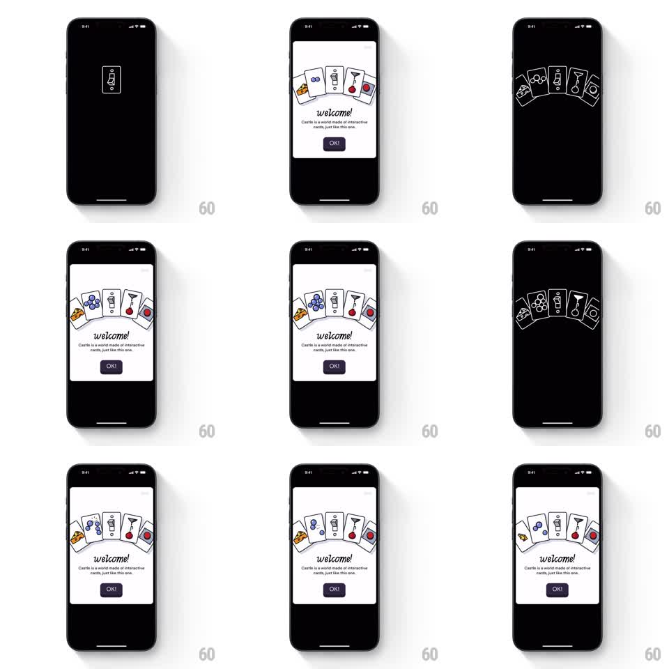

Media
Frame-by-frame

Rebuild this interaction 1:1: Castle's welcome screen - a hand-drawn phone icon on black blooms into a fan of sketchy interactive cards (pizza, grapes, phone, cherry, record) arcing over "welcome!" and an "OK!" button; each card reacts to its own tap with a playful micro-animation.

Rebuild this interaction 1:1: Castle's welcome screen - a hand-drawn phone icon on black blooms into a fan of sketchy interactive cards (pizza, grapes, phone, cherry, record) arcing over "welcome!" and an "OK!" button; each card reacts to its own tap with a playful micro-animation. ## Integration Integration: stack-agnostic spec - springs given as stiffness/damping, timed motions as duration + curve; map every value to your framework and animation library of choice. ## Scene Black screen that reveals a white panel: a fan of five hand-drawn cards arced across the top (pizza slice, grapes, phone, cherry lollipop, vinyl record - black ink with single accent colors), "welcome!" in script below, the line "Castle is a world made of interactive cards, just like this one.", and a dark "OK!" button. The background alternates between black and white as the fan blooms. ## Motion spec Pattern: card fan bloom with per-card tap reactions. - The phone outline draws itself on black (stroke draw, 600ms), then bursts into the fanned cards (each card rotates from 0 to its fan angle (-30deg to +30deg) and translates outward, spring ~280/16, 60ms stagger). - The background flashes from black to white as the fan lands (150ms). - The fan idles with a gentle sway (all cards rotate +/-2deg together, 3s sine). - Tap a card: it pops toward the viewer (scale 1 -> 1.15, spring ~320/16) and plays its own micro-animation - the pizza wiggles, the record spins (360deg, 500ms), the cherry bounces - then settles back. - "welcome!" and the subcopy fade up after the fan (250ms); "OK!" pops in last (scale 0.9 -> 1, spring ~300/18). ## Calibration - Fan angles are fixed and asymmetric-looking, like a hand of cards - not a perfect arc. - Each card's tap reaction is distinct; the record always spins. ## Reduced motion The fan appears formed; tapping a card highlights it without motion. ## Don't miss - The hand-drawn wobble in the card art is part of the style - keep edges sketchy. - The black-to-white flash sells the burst; keep it fast.